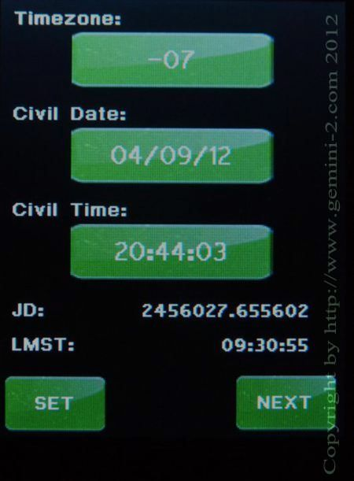

| Interactive Hand-Controller Menus - click on green button to Navigate |
|

Note: If you are using a GPS receiver to get the time, then the offset does not matter. Gemini-2 only uses UTC time for all the internal calculations, and a GPS returns UTC time/date only. You can disregard this screen when using a GPS receiver. However, if your time zone offset is not correct, then Gemini-2 will show the wrong Local time and date. This does not change any calculations of sky position. |
Enter date and time, and
time zone offset on this screen. The time is entered in local military time format. I.e.,
1.00 PM would be 13:00:00, The date and time will be converted to UTC
time and date internally. Touching each entry on the screen will take you to the setup/entry screen for that function. Enter Timezone offset, Date and then Time, in that order. Each screen will bring you back here after you're done. Once all are entered hit the Set button and then Next button. Please note that the time you set will not take effect until you hit the Set button on this screen. The Time just above the Next button is the calculated Sidereal time. If you would like to make sure it is correct go to https://www.localsiderealtime.com/ and enter your longitude. It will show your sidereal time and you can compare them to make sure everything is correct. |